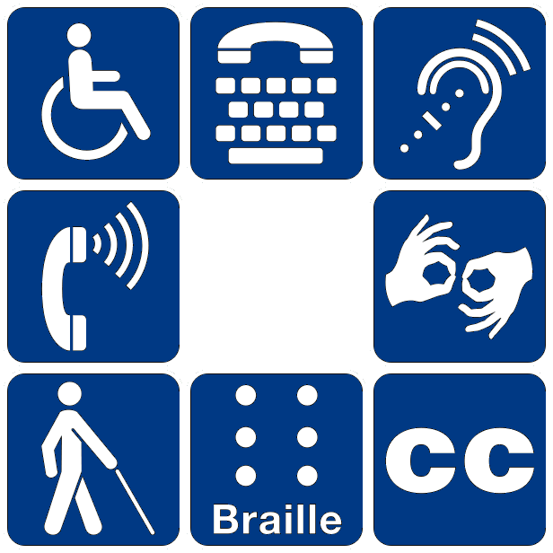
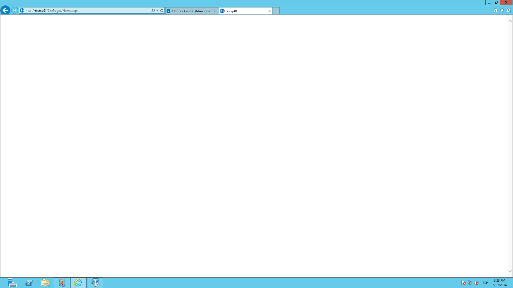

acCeSSibility
Heather Migliorisi
Senior UI Developer, GiftCards.com
Accessibility
Accessibility means a digital world for everyone, regardless of where, when, why, and how you consume the content that is being communicated. It’s communication that’s non-discriminatory in every way.
-from simplyaccessible.com
Accessibility means a digital world for everyone.
But, WHY?
Reasons for Implementing Accessibility
Money - Larger potential consumer/user base
Census Data Concludes: Nearly 1 in 5 People Have a Disability in the U.S.
*image from http://www.commerce.gov/blog/2012/07/25/census-report-nearly-1-5-people-have-disability-us-update
Money/Legal - Work With the Government
Businesses must comply with Section 508 when supplying Electronic and Information Technology goods and services to the federal government. - source webaim.org
Money/Legal - Avoid lawsuits and/or bad press
 Reduction of Legal Risk as Web Accessibility Business Case and List of Lawsuits
Reduction of Legal Risk as Web Accessibility Business Case and List of Lawsuits
Moral - Improve the lives of people living with disabilities

Benefits Everyone

Benefits Everyone

Benefits Everyone

Benefits Everyone - Learning
Una Kravets: On Learning and ComprehensionPreparing for future technology

Disability Classifications
Vision (approx 8.1 million people*)
Color Blindness: difficulty distinguishing between colors
-

Achromatopsia
-

Deuteranopia
-
Protanopia
-
Tritanopia
*digestible census data: http://factfinder.census.gov/faces/tableservices/jsf/pages/productview.xhtml?pid=ACS_12_1YR_S1810&prodType=table
Color Blindness
Low Vision: blurry, clouded vision, central field loss, and tunnel vision
Blindness: substantial, uncorrectable loss of vision in both eyes

Hearing (approx 7.6 million people*)
Motor (approx 19.9 million people*)
Image of a headstick from Etsy. Video: https://www.youtube.com/watch?v=4gVloz3FY2g
*digestible census data: http://factfinder.census.gov/faces/tableservices/jsf/pages/productview.xhtml?pid=ACS_12_1YR_S1810&prodType=table

Listing from Etsy's shapedad
Cognitive (approx 9.4 million people)
Things to consider for the web
What about you?
Temporarily Disabled
Eventually Less-abled
Environmental Conditions
We are addicted to the internet.
There's really no hope for us.
#OneDayWithoutInternet
What if...
You want to buy the latest/greatest tech gadget and the page loads blank.
...the page is freaking out and filled unrecognizable errors

At what point do you give up?
Every website you visited was like this?
The Internet We Have Today Is Broken
But, HTML IS accessible by default:

- text and links
- images with alt text
- simple forms
- Override browser defaults
- Bad semantics
- Audio/Video (without cations/transcripts)
- Javascript (manipulating the dom)

How did we get here?
Is accessibility a part of the project cycle?
Regardless of project management method:
- waterfall
- agile
- kanban
Is accessibility ever a:
- business requirement
- part of planning meetings
- design requirement
- development requirement
- QA checklist item
- feature listed in release notes
Or, is accessibility just an afterthought?

We've changed our mindset before
RWD & Mobile First

image stolen from the internets metamonks.com
We can do it again.
Accessible Web Design (AWD) OR Accessibility First
Let's ensure that people with disabilities can easily access the web.

Inclusive or Universal Design
Let's Get Started!
What's ARIA and when should it be used?

Accessible Rich Internet Applications (ARIA)
ARIA is a set of attributes that you can add to HTML elements.
These attributes communicate to assistive technologies a semantic:
- role
- state
- property
Using ARIA
First rule of ARIA use

First rule of ARIA use: Don't use it!

"ARIA roles add nothing to default semantics of most elements" - Steve Faulkner
Don't add default implicit roles to elements
❮button role="button"❯ button text ❮/button❯
Don't add ARIA state or property attributes in addition to their native HTML counterparts
❮input type="text" required aria-required="true"❯
❮div hidden aria-hidden="true"❯
Don't add ARIA roles and states or properties to long-implemented structural elements
❮h1 role="heading" aria-level="1"❯heading text❮/h1❯
New(ish) HTML5 Elements with default implicit semantics
What this means is that, where implemented, the browser will expose the default implicit semantics of the element so you don’t have to.
❮header❯ maps to role="banner"
❮nav❯ maps to role="navigation"
❮main❯ maps to role="main"
❮section❯ maps to role="region"
❮article❯ maps to role="article"
❮aside❯ maps to role="complementary"
❮footer❯ maps to role="contentinfo"
New(ish) HTML5 Elements: Browser Support

New(ish) HTML5 Elements: Browser Support

BUT IE and Safari do not offer support for all of the role mappings. -Deque University
USE it for Landmark Roles
❮header role="banner"❯
❮nav role="navigation" ❯
❮main role="main" ❯
❮footer role="contentinfo" ❯
Step 1. Site Audit for bots

W3C Validation
Note - conformance checking
Notes on conformance checking
Semantic HTML
- Headings
- are meant to help users understand content hierarchy
- are not meant for visual styling
- levels should not be skipped (BAD - h1, h2, h4)
- Links, Buttons, Divs and Spans
- Links - are being styled like buttons, which is fine. Just don't mark them up as buttons.
- a, div and span ARE NOT buttons
BAD!Products - if it acts like a button, make it a
Good:
Step 2. Site Audit for Keyboard Accessibility
Does it: Highlight what it's on?

Does it: Jump somewhere unexpected?

Go through the main nav every time?
Or do you provide a skip nav? 
Or skip different sections of content?
Step 3. Site Audit for Contrast and Color
The difference in color and light between parts of an image. -wikipedia

Image from: howdesign.com
Meaningful Content Without Color
Bad: Error Messaging Relies on Color

Better: Message Conveyed With Icons
Testing
Step 4. Site Audit for Transcription and Closed Caption
Simple. Do it.

Because it's awful!

Do it with style.

Step 5. Site Audit for Meaningful Alternative Text
Testing Alt Text
Figure and Figcaption

Be careful when choosing houseplants if you have pets. They may be poisonous to the animal.
Off Screen Text for Icons
HTML
CSS
//hiding text elements from the view, but keeping them available to the screen reader
.sr-only {
position: absolute !important;
height: 1px;
width: 1px;
overflow: hidden;
clip: rect(1px, 1px, 1px, 1px);
clip-path: polygon(0px 0px, 0px 0px, 0px 0px, 0px 0px); //for clip being deprecated
}
Accessible SVGs
Example from: Tips for Creating Accessible SVG by Leonie Watson
Accessible Canvas
Step 6. Site Audit for Easy To Read and Understand Content
- Make sure the text is large enough and has proper contrast.
- Choose easy to read fonts.
- Left align the text. It's easier to read.
- Keep in mind that users may have a hard time with visual, math or reading comprehension.
- Use clear and simple written content.
Testing
Testing

Online Testing Tools
- http://wave.webaim.org/
- http://tenon.io/
- http://leaverou.github.io/contrast-ratio/
- http://www.hemingwayapp.com/
Chrome Testing Tools
- Tenon
- Wave
- Chrome Developer Tools
- aXe
- NoCoffee
Step 7. Site Audit for Animation
Things to avoid:

- Large areas of motion and the parallax-like effects of background and foreground moving at different speeds
- Autoplaying carousels without controls to pause or stop it
- Scrolljacking - background animates at a different speed than your scrolling effort
Step 8. Site Audit for Functional and Logical Forms
- Make sure forms are keyboard accessible. Do not use positive
tabindex="1" - Label everything and use
for="IdOfTheRepresentedInput"because the screen reader announces it
Step 9. Site Audit Using Screen Reader

Step 9. Site Audit Using other AT
Step 10. Test With Real Users
Step 11: Record/Document the Audits
Make note of pages you audit:

Step 12: Provide Code Samples
Step 13: Add Testing to build Process
So many ways:
- NPM: https://www.npmjs.com/browse/keyword/a11y
- Gulp-a11y
- Grunt-a11y
- Tenon
- Ember
- React
- pa11y (dashboard): http://pa11y.org/
Step 13: Add Testing to build Process
pa11y
Remember to Vet Your Framework/Library/Features
Think "POUR"
The four main guiding principles of accessibility are:
Perceivable - provide content alternatives (images, audio, video)
Operable (without a mouse)
Understandable - clear and simple (writing and functionality)
Robust - works across many devices
Patience You Must Have
Progress is Better than Perfection

Community
A11y Slackers: http://web-a11y.herokuapp.com/ or #a11y on twitter
Resources
hmig.me/a11y-resources